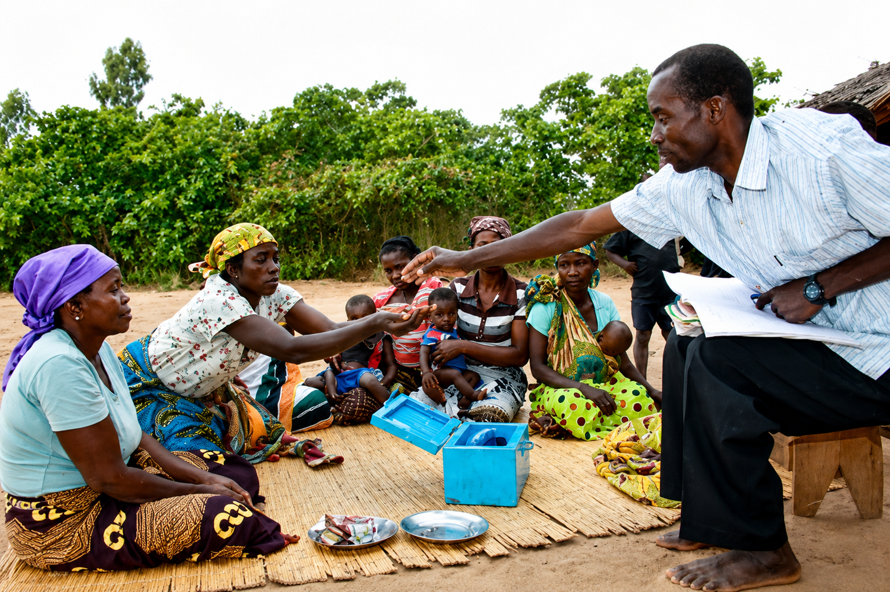

Ideas that move
projects forward.
RISE turns field evidence, technical practice and Liberia’s development realities into clear perspectives for better decisions.
EXPLORE INSIGHTSExplore by topic
Perspectives & Domains
Adaptation, safeguards, restoration and environmental performance.
Responsible mining, governance and resource stewardship.
Resilient infrastructure, renewable energy and practical innovation.
Climate-smart production, value chains and local resilience.
Research, GIS, monitoring, evaluation and evidence use.